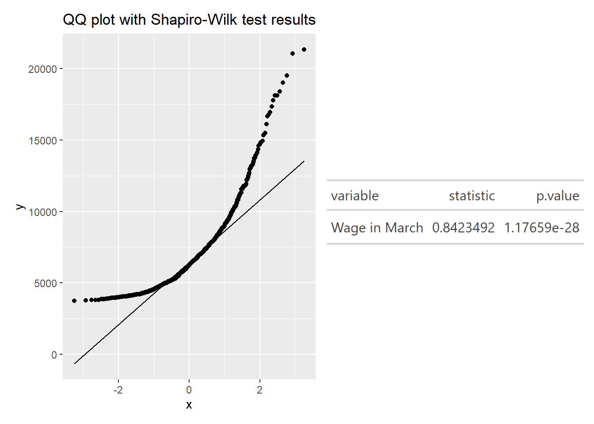
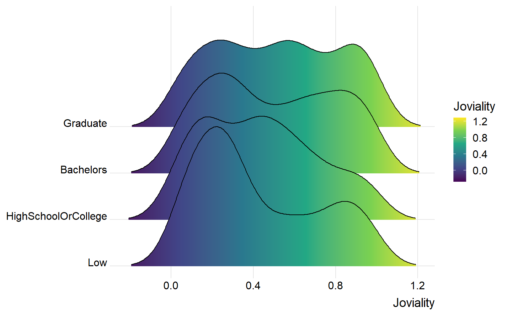
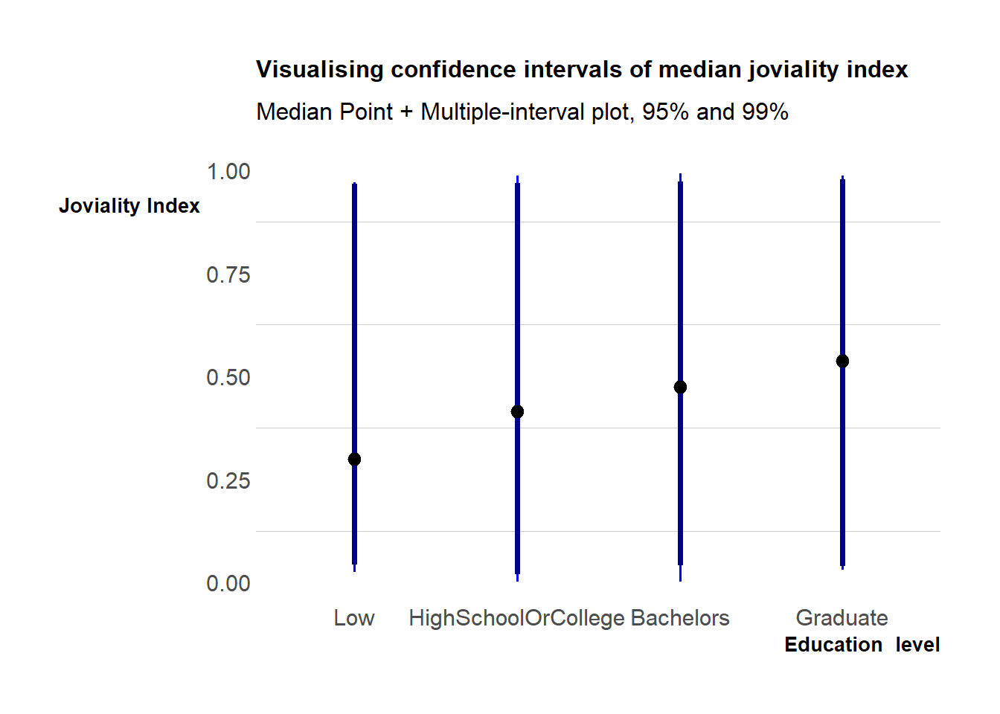

pacman::p_load(plotly, knitr, patchwork, tidyverse, ggthemes,hrbrthemes, ggiraph, ggstatsplot, ggdist, png, gifski, rstatix, gt)Take-home_Ex01
1. Task and Dataset
This exerise aims to reveal the demographic and financial characteristics of the city of Engagement, using appropriate static and interactive statistical graphics methods. It also requires a user-friendly and interactive solution that helps city managers and planners to explore the complex data in an engaging way and reveal hidden patterns.
The dataset consists of a sample survey of 1000 representative residents that collects data related to their household demographic and spending patterns, among other things. There are primarily two datasets used in this exercise
’FinancialJournal.csv”: Contains 1513635 number of daily transaction records (different categories of income and expenses) over a period of twelve months from March 2022 to February 2023.
’Particpants.csv” : Contains demographics information like household size, age, education level, interest groups, joviality index and whether each household has kids.
In this exercise, each dataset will be cleansed separately and then joined by ‘participantID’ as primary key to form the final dataset used for further analysis.
2. Data Preparation
2.1 Install and load the required libraries
The code chunk below uses pacman::p_load() to check if packages are installed. If they are, they will be launched into R. The packages installed are
plotly: Used for creating interactive web-based graphs.knitr: Used for dynamic report generationpatchwork: Used to combine plotstidyverse: A collection of core packages designed for data science, used extensively for data preparation and wrangling.ggthemes: Provide additional themes forggplot2ggstatsplot: Used for creating graphics with details from statistical tests.ggdist: Used for visualising distribution and uncertaintyrstatix: Allows us to perform basic statistical tests, including t-test, Wilcoxon test, ANOVA, Kruskal-Wallis and correlation analyses.gt: starting from a tibble table, customise a table and export in various formats. Most importantly, it works with patch. We will save the tabular results from shapiro test as gt object and export using gtsave() into .png file later.
2.2 Import the dataset
The datasets are imported using tidyverse’s readr::read_csv() function.
’FinancialJournal.csv” is stored as finance variable.
finance <- read_csv('data/FinancialJournal.csv')# A tibble: 6 × 4
participantId timestamp category amount
<dbl> <dttm> <chr> <dbl>
1 0 2022-03-01 00:00:00 Wage 2473.
2 0 2022-03-01 00:00:00 Shelter -555.
3 0 2022-03-01 00:00:00 Education -38.0
4 1 2022-03-01 00:00:00 Wage 2047.
5 1 2022-03-01 00:00:00 Shelter -555.
6 1 2022-03-01 00:00:00 Education -38.0Check for empty values in the finance table using the is.na() function.
any(is.na(finance))[1] FALSE’Particpants.csv” is stored as ptcp variable.
ptcp <- read_csv('data/Participants.csv')# A tibble: 6 × 7
participantId householdSize haveKids age educationLevel interestGroup
<dbl> <dbl> <lgl> <dbl> <chr> <chr>
1 0 3 TRUE 36 HighSchoolOrCollege H
2 1 3 TRUE 25 HighSchoolOrCollege B
3 2 3 TRUE 35 HighSchoolOrCollege A
4 3 3 TRUE 21 HighSchoolOrCollege I
5 4 3 TRUE 43 Bachelors H
6 5 3 TRUE 32 HighSchoolOrCollege D
# ℹ 1 more variable: joviality <dbl>Checking for empty values in ptcp table using the is.na()` function.
any(is.na(ptcp))[1] FALSE2.3 Data Issues and wrangling
I will discuss the issues in the datasets and proposed cleaning methods.
2.3.1 finance dataset issues:
participantId should be converted from
<dbl>format to<chr>format. It should be a categorical and not numerical data type.timestamp should be converted from
<dttm>format to<date>format as I will not be analysing time in this exercise.Negative values of amount that belong to the expenses categories should be converted to positive values. The amount will also be rounded to two decimal places.
The code chunk below does the following:
use the
as.character()function to convert participantId to<chr>formatcreate a new column month_year by extracting the year and month from the timestamp column using the
format()function with the%Y-%mformat specifier.use the
abs()function to convert negative values amount to positive and round the values to 2 decimal places using theround()function.
# Convert participantId to character
finance <- finance %>% mutate(participantId = as.character(participantId))
# Extract month and year from timestamp
finance <- finance %>%
mutate(month_year = format(timestamp, "%m-%Y"))
# Transform negative amounts to positive and round to 2 decimal places
finance <- finance %>%
mutate(amount = abs(amount),
amount = round(amount, 2))A check for duplicates using the duplicated() function reveals that there are 1,113 records of duplicates.
- The
duplicated()function to identify the duplicate rows. It returns a logical vector indicating whether each row is a duplicate of a previous row in the data frame. We can then use this logical vector to subset the data frame and show the duplicate rows. The logical vector is stored in a filter duplicated_rows which is used to subset thefinancedata.
# Show duplicate rows
duplicated_rows <- finance[duplicated(finance),]
glimpse(duplicated_rows)Rows: 1,113
Columns: 5
$ participantId <chr> "0", "0", "1", "1", "2", "2", "3", "3", "4", "4", "5", "…
$ timestamp <dttm> 2022-03-01, 2022-03-01, 2022-03-01, 2022-03-01, 2022-03…
$ category <chr> "Shelter", "Education", "Shelter", "Education", "Shelter…
$ amount <dbl> 554.99, 38.01, 554.99, 38.01, 556.55, 12.81, 554.99, 38.…
$ month_year <chr> "03-2022", "03-2022", "03-2022", "03-2022", "03-2022", "…unique()function is used to remove the duplicate rows formfinancedata
# Remove duplicate rows
finance <- unique(finance)- Perform a final check to verify that there are no more duplicate using
any()function
any(duplicated(finance))[1] FALSEThe last thing to do is to create a new column date that is in <date> format using the as.Date function.
the paste0() function is used to concatenate “01-” with each value in the month_year column. This is because as.Date() requires a complete date in the format “dd-mm-yyyy”
finance$date <- as.Date(paste0("01-", finance$month_year), format = "%d-%m-%Y")
Other issues
When the finance dataset is group-by the date variable , it is noticed that the number of distinct participantID who took part in the survey was 1,011 in March 2022 and suddenly reduced to a constant value of 880 from April 2022 onwards. It seems to suggest that there are 131 residents who moved out of the city at the end of March 2022.
In the code chunk below:
dataset is group-by date and the distinct count of participantID is generated using
n_distinctfunctionthe missing dataframe is displayed below using
knitr::kable()function
missing_summary <- finance %>%
group_by(date) %>%
summarise(n_distinct=n_distinct(participantId)) %>%
rename(`Number of unique participantId` = n_distinct)
knitr::kable(missing_summary, "simple")| date | Number of unique participantId |
|---|---|
| 2022-03-01 | 1011 |
| 2022-04-01 | 880 |
| 2022-05-01 | 880 |
| 2022-06-01 | 880 |
| 2022-07-01 | 880 |
| 2022-08-01 | 880 |
| 2022-09-01 | 880 |
| 2022-10-01 | 880 |
| 2022-11-01 | 880 |
| 2022-12-01 | 880 |
| 2023-01-01 | 880 |
| 2023-02-01 | 880 |
Since 11 out of 12 months of records are missing for these 131 residents, we will delete their records from the finance dataset.
The code chunk below does the following:
extract the participantIds of residents whose records exists in March 22 but not in all April 22 using the
anti-joinfunctionpass the unique
participantIdcolumn name as an argument topull()and use theas.vector()function to convert the resulting tibble column to a vectorresulting dataframe will only contain
participantIds that are in ‘2022-03-01’ but not in ‘2022-04-01’ onwards. There are 131 of them.
missing_id <- finance %>%
filter(date == as.Date('2022-03-01')) %>% # filter for '2022-03-01' date
anti_join(finance %>%
filter(date == as.Date('2022-04-01')), # filter for '2022-04-01' date
by = 'participantId') %>% # anti-join by 'participantId'
select(participantId) %>%
distinct(participantId)
# extract participantId column as convert this column to vector.
missing_id_vector <- as.vector(pull(missing_id, participantId))
missing_id_vector [1] "44" "127" "142" "154" "161" "256" "262" "267" "279" "285" "288" "298"
[13] "301" "346" "352" "356" "380" "382" "383" "384" "392" "406" "407" "509"
[25] "510" "512" "514" "523" "526" "539" "541" "553" "558" "567" "568" "572"
[37] "574" "575" "577" "580" "589" "595" "599" "602" "603" "604" "605" "611"
[49] "615" "617" "621" "628" "629" "634" "639" "641" "643" "647" "653" "655"
[61] "657" "658" "663" "668" "670" "756" "757" "760" "761" "762" "768" "771"
[73] "773" "774" "780" "785" "789" "790" "791" "792" "793" "794" "799" "802"
[85] "806" "808" "816" "817" "818" "824" "825" "827" "828" "831" "832" "834"
[97] "839" "842" "846" "847" "853" "855" "856" "858" "859" "860" "862" "864"
[109] "867" "872" "875" "876" "883" "884" "885" "886" "887" "892" "896" "897"
[121] "900" "901" "902" "907" "909" "911" "919" "920" "923" "924" "925"Next, we will remove all records of the 131 potentially non-residents from the finance dataset .
In the code chunk below:
the
%in%operator is to check if eachidvalue is contained in the missing_id_vectorthe negation operator
!ensures the resulting filtered data frame will not contain the rows where theidvalues are in missing_id_vector
finance1 <- finance[!finance$participantId %in% missing_id_vector, ]
finance1# A tibble: 1,509,897 × 6
participantId timestamp category amount month_year date
<chr> <dttm> <chr> <dbl> <chr> <date>
1 0 2022-03-01 00:00:00 Wage 2473. 03-2022 2022-03-01
2 0 2022-03-01 00:00:00 Shelter 555. 03-2022 2022-03-01
3 0 2022-03-01 00:00:00 Education 38.0 03-2022 2022-03-01
4 1 2022-03-01 00:00:00 Wage 2047. 03-2022 2022-03-01
5 1 2022-03-01 00:00:00 Shelter 555. 03-2022 2022-03-01
6 1 2022-03-01 00:00:00 Education 38.0 03-2022 2022-03-01
7 2 2022-03-01 00:00:00 Wage 2437. 03-2022 2022-03-01
8 2 2022-03-01 00:00:00 Shelter 557. 03-2022 2022-03-01
9 2 2022-03-01 00:00:00 Education 12.8 03-2022 2022-03-01
10 3 2022-03-01 00:00:00 Wage 2367. 03-2022 2022-03-01
# ℹ 1,509,887 more rowsWe will double check that the records of 131 non-residents have been removed from finance1 dataframe.
In the code below
distinct()function to extract the distinctparticipantIdvalues fromfinance1the
n_distinct()function will count the number of distinctparticipantIdvalues in the resulting tibble
finance1 %>%
distinct(participantId) %>%
n_distinct()[1] 8802.3.2 ptcp dataset issues:
participantId should be converted from
<dbl>format to<chr>formathouseholdSize should be converted from
<dbl>format to<fct>format. It does not make sense to have 2.5 persons.age should be converted from
<dbl>format to<int>format.educationLevel should be converted from
<chr>to<fct>. It should also be ordered according to ‘Low’, ‘HighSchoolOrCollege’, ‘Bachelors’ and ‘Graduate’.
The code chunk below does the following:
as.characterandas.factorfunctions are used to convert participantId to<chr>, householdSize to<fct>and age to<int>.factor(educationLevel, levels=c("Low", "HighSchoolOrCollege", "Bachelors", "Graduate")))not only converts educationLevel to factor, but also order the values inside.
# convert to factor
ptcp <- ptcp %>% mutate(participantId = as.character(participantId))
ptcp <- ptcp %>% mutate(householdSize = as.factor(householdSize))
# Convert educationLevel to factor and order accordingly
ptcp <- ptcp %>% mutate(educationLevel = factor(educationLevel, levels=c("Low", "HighSchoolOrCollege", "Bachelors", "Graduate")))
# convert age to int
ptcp <- ptcp %>% mutate(age = as.integer(age))The columns format are all in order now.
glimpse(ptcp)Rows: 1,011
Columns: 7
$ participantId <chr> "0", "1", "2", "3", "4", "5", "6", "7", "8", "9", "10",…
$ householdSize <fct> 3, 3, 3, 3, 3, 3, 3, 3, 3, 3, 3, 3, 3, 3, 3, 3, 3, 3, 3…
$ haveKids <lgl> TRUE, TRUE, TRUE, TRUE, TRUE, TRUE, TRUE, TRUE, TRUE, T…
$ age <int> 36, 25, 35, 21, 43, 32, 26, 27, 20, 35, 48, 27, 34, 18,…
$ educationLevel <fct> HighSchoolOrCollege, HighSchoolOrCollege, HighSchoolOrC…
$ interestGroup <chr> "H", "B", "A", "I", "H", "D", "I", "A", "G", "D", "D", …
$ joviality <dbl> 0.001626703, 0.328086500, 0.393469590, 0.138063446, 0.8…Use distinct() and n_distinct() to check on the number of unique participantIds in ptcp table.
ptcp %>%
distinct(participantId) %>%
n_distinct()[1] 1011Currently, the ptcp table still contain the demographic records of the 131 residents who moved out. Let us remove their records by using similar method used in removing the same records in financial table.
ptcp1 <- ptcp[!ptcp$participantId %in% missing_id_vector, ]
ptcp1 %>%
distinct(participantId) %>%
n_distinct()[1] 880Both finance1 and ptcp1 tables now contains information about the same number of participantIds.
2.3.3 Convert finance1 table to wide format and perform left outer join with ptcp1 table.
We will now convert the finance1 dataframe from a long to a wide format. The code chunk below does the following:
group the data by participantId , date and category using the
group_byfunctionuse the
sumfunction to calculate the total monthly amount for each category per participantId per monththe
pivot_widerfunction will convert the category column to wide format with total monthly values in the amount column.finance1_wide<- finance1 %>% group_by(participantId, date, category) %>% summarise(total_amount = sum(amount)) %>% pivot_wider(names_from = category, values_from = total_amount)# A tibble: 10,560 × 8 # Groups: participantId, date [10,560] participantId date Education Food Recreation Shelter Wage <chr> <date> <dbl> <dbl> <dbl> <dbl> <dbl> 1 0 2022-03-01 38.0 268. 349. 555. 11932. 2 0 2022-04-01 38.0 266. 219. 555. 8637. 3 0 2022-05-01 38.0 265. 383. 555. 9048. 4 0 2022-06-01 38.0 257. 466. 555. 9048. 5 0 2022-07-01 38.0 270. 1069. 555. 8637. 6 0 2022-08-01 38.0 262. 314. 555. 9459. 7 0 2022-09-01 38.0 256. 295. 555. 9048. 8 0 2022-10-01 38.0 267. 25.0 555. 8637. 9 0 2022-11-01 38.0 261 377. 555. 9048. 10 0 2022-12-01 38.0 266. 357. 555. 9048. # ℹ 10,550 more rows # ℹ 1 more variable: RentAdjustment <dbl>NoteAbout finance1_wide table
finance_wideis a table that has one row for each unique combination of participantId and month and one column for each unique category from the formerfinance1table.The code chunk below performs a left outer join with finance1_wide table (left) and ptcp1 table (right) with join key participantId.
# left outer join finance1_wide_ptcp1 <- left_join(finance1_wide, ptcp1, by = "participantId")The first 12 rows of the cleansed finance1_wide_ptcp1 is displayed using
knitr::kable()function. It contains 10,560 rows and 14 columns.knitr::kable(head(finance1_wide_ptcp1,12), "simple")participantId date Education Food Recreation Shelter Wage RentAdjustment householdSize haveKids age educationLevel interestGroup joviality 0 2022-03-01 38.01 268.26 348.68 554.99 11931.95 NA 3 TRUE 36 HighSchoolOrCollege H 0.0016267 0 2022-04-01 38.01 265.79 219.42 554.99 8636.88 NA 3 TRUE 36 HighSchoolOrCollege H 0.0016267 0 2022-05-01 38.01 264.54 382.99 554.99 9048.16 NA 3 TRUE 36 HighSchoolOrCollege H 0.0016267 0 2022-06-01 38.01 256.90 465.67 554.99 9048.16 NA 3 TRUE 36 HighSchoolOrCollege H 0.0016267 0 2022-07-01 38.01 270.13 1069.48 554.99 8636.88 NA 3 TRUE 36 HighSchoolOrCollege H 0.0016267 0 2022-08-01 38.01 261.76 314.13 554.99 9459.44 NA 3 TRUE 36 HighSchoolOrCollege H 0.0016267 0 2022-09-01 38.01 256.04 294.64 554.99 9048.16 NA 3 TRUE 36 HighSchoolOrCollege H 0.0016267 0 2022-10-01 38.01 266.67 25.01 554.99 8636.88 NA 3 TRUE 36 HighSchoolOrCollege H 0.0016267 0 2022-11-01 38.01 261.00 377.41 554.99 9048.16 NA 3 TRUE 36 HighSchoolOrCollege H 0.0016267 0 2022-12-01 38.01 265.98 356.69 554.99 9048.16 NA 3 TRUE 36 HighSchoolOrCollege H 0.0016267 0 2023-01-01 38.01 264.97 209.77 554.99 9048.16 NA 3 TRUE 36 HighSchoolOrCollege H 0.0016267 0 2023-02-01 38.01 239.05 319.93 554.99 8225.60 NA 3 TRUE 36 HighSchoolOrCollege H 0.0016267
3 Visualisation
3.1 Wage and categories of expenses
In this section, I will explore the dataset from high level and then zoom into interesting patterns (if I can find any =))
3.2.1 Normality assumptions of annual wage
Before zooming into wages in March, we will first perform a test to confirm whether wage follows the normal distribution.
H0: The wage does not follow a normal distribution.
H1: The wage follows a normal distribution.
Code
set.seed(123) # for reproducibility
sample_5000<- finance1_wide_ptcp1[sample(1:nrow(finance1_wide_ptcp1), 5000), ] # perform sampling as limit of shapiro test is 5000
qq <- ggplot(sample_5000,
aes(sample=Wage)) + #<<< use a new argument call sample: el scores
stat_qq() +
stat_qq_line() +
ggtitle("QQ plot with Shapiro-Wilk test results") # add plot title
sw_t <- shapiro_test(sample_5000$Wage) %>%
as_tibble() %>%
mutate(variable = "Wage")%>% gt() #<<< make into a gt format (will give a nice table) shapiro.test is not used here as it gives output in another format.
tmp <- tempfile(fileext = '.png') # create temp table
gtsave(sw_t, tmp) # use gtsave() to save sw_t into tmp folder
table_png <- png::readPNG(tmp, native = TRUE)
qq+table_png
From the Shapiro test , p-value < 0.05 and we have enough statistical evidence to reject the null hypothesis and conclude that Wage does not follow the normal distribution.
3.1.2 Interactive Line charts of wages by month
Preparing the data
Code
highlevel <- finance1_wide_ptcp1 %>%
group_by(date) %>%
summarize(Education = sum(Education, na.rm = TRUE),
Food = sum(Food, na.rm = TRUE),
Recreation = sum(Recreation, na.rm = TRUE),
Shelter = sum(Shelter, na.rm = TRUE),
Wage = sum(Wage, na.rm = TRUE),
RentAdjustment = sum(RentAdjustment, na.rm = TRUE),
ExpenseP = sum(Education, Food, Recreation, Shelter), #<<<
Income = sum(Wage, RentAdjustment), #<<<
Saving = Income - ExpenseP, #<<<
Expense = ExpenseP * -1 #<<<
)
head(highlevel,5)# A tibble: 5 × 11
date Education Food Recreation Shelter Wage RentAdjustment ExpenseP
<date> <dbl> <dbl> <dbl> <dbl> <dbl> <dbl> <dbl>
1 2022-03-01 11424. 320126. 649580. 631623. 6.07e6 53504. 1612753.
2 2022-04-01 11424. 304282. 389688. 559919. 3.47e6 1429. 1265312.
3 2022-05-01 11424. 313538. 336413. 558451. 3.62e6 0 1219825.
4 2022-06-01 11424. 302893. 314804. 558451. 3.61e6 0 1187571.
5 2022-07-01 11424. 313803. 329608. 558451. 3.49e6 0 1213285.
# ℹ 3 more variables: Income <dbl>, Saving <dbl>, Expense <dbl>Code
library(scales)
q1<-highlevel %>%
ggplot(aes(x = date)) +
geom_line(aes(y = Wage, color = "Red", linetype = "Wage"), size = 1) +
# annotating the plot
geom_text(aes(x=as.Date("2022-04-01"),
y=6000000,
label="High wages \nobserved in \nMarch"),
hjust=1, vjust=1, color='black', size=2.5) +
geom_text(aes(x=as.Date("2022-12-01"), y=3800000, label="Wage"),
hjust=1, vjust=1,color='red', size=2.5) +
# scale control
labs(x = "Month", y = "Amount") +
scale_x_date(date_breaks = '1 month',date_labels = "%b %Y") +
scale_y_continuous(limits = c(0, 6500000), breaks=seq(0, 6500000, 1000000),
labels= comma) +
theme_light(base_size = 12) +
theme(axis.title = element_text(size = 10 , face = "bold"),
axis.text = element_text(size = 10),
axis.text.x = element_text(angle = 45, hjust = 1),
axis.line = element_line(size = 1),
panel.grid.major.x = element_blank(),
panel.grid.minor = element_line(colour='black'),
panel.border = element_blank(),
legend.position = "none",
legend.title = element_blank()) +
labs(title= 'Cumulative Income across Months',
x='Month',
y='Amount')
ggplotly(q1,tooltip = c('labels','x','y'))Now lets examine the wages across the months closer using boxplots.
The boxplot is able to show the distribution of wages of the residents across all the months. Wage is much higher in March and possible reasons could be due to Harvest / Bonus month. Are the medians of the month wage significantly different from one another? (See next tab)
Code
library(lubridate)
df_wage_edu_month <- finance1_wide_ptcp1 %>%
mutate(month = month(date))
df_wage_edu_month$month <- factor(month(finance1_wide_ptcp1$date),
levels = c(3, 4, 5, 6, 7, 8, 9, 10, 11, 12, 1, 2),
labels = c("Mar 22", "Apr 22", "May 22", "Jun 22", "Jul 22", "Aug 22", "Sep 22", "Oct 22", "Nov 22", "Dec 22", "Jan 23", "Feb 23"))
ggplot(df_wage_edu_month,
aes(x = month, y = Wage)) +
geom_boxplot(aes(fill = educationLevel)) +
stat_summary(fun.y = "median", geom = "point", color = "red", size = 2) +
labs(x = "Month", y = "Wage", fill = "Education Level") +
scale_fill_brewer(palette="RdBu") +
theme_minimal() +
theme(legend.key.size = unit(0.5,'cm'),
legend.position="bottom",
axis.title = element_text(size = 10 , face = "bold"),
axis.text.x = element_text(angle = 45, hjust = 1))
The plot below shows us the pairs of months where wage are significantly different. See the next tab to see the error plots.
Code
ggbetweenstats(data = df_wage_edu_month, x = month, y = Wage,
xlab = "Month", ylab = "Wage",
type = "np", pairwise.comparisons = TRUE, pairwise.display = "s",
sort = "descending",
sort.fun = median,
mean.ci = T, p.adjust.method = "fdr", conf.level = 0.95,
title = "Comparison of Median Wage across Months") +
# scale_y_continuous(limits = c(0, 300000)) +
theme(axis.title.y=element_text(angle = 0,
vjust=0.9))
As we are analyzing survey data, each of our sample mean could vary from the actual population mean. Thus we have to visualise the margin of error. The higher the CI, the higher the margin of error.
95% and 99% confidence intervals are constructed for the median wage for each month.
Note: A confidence level of 95% means the true result will be within the error bar range 95 times out of 100 sampling tries.
Code
df_wage_edu_month %>%
ggplot(aes(x = month, y = Wage)) +
#Using stat_pointinterval to plot the points and intervals
stat_pointinterval(.width = c(0.95,0.99),
.point = median,
.interval = qi,
aes(interval_color=stat(level)),
show.legend = FALSE) +
#Defining the color of the intervals
scale_color_manual(
values = c("blue", "darkblue"),
aesthetics = "interval_color") +
#Title, subtitle, and caption
labs(
title = "Visualising confidence intervals of median wage",
subtitle = "Median Point + Multiple-interval plot, 95% and 99%",
x = "Months", y = "Wage") +
theme_ipsum() +
theme(axis.title.y=element_text(angle = 0,
vjust=0.9,
size = 10,
face='bold'),
axis.title.x=element_text(size = 10,
face='bold'),
axis.text.x = element_text(angle = 45,
hjust = 1),
plot.title = element_text(size = 12,
face='bold'),
panel.border = element_blank(),
panel.grid.major = element_blank())
Next Plot: Interactive (pending coordinated) Line chart of expenditures by month
Design considerations:
Instead of combining Education, Recreation, Food and Shelter expense in one chart, I have plotted them on one chart each with different Y axis range. This will be enable us to visualise variability of amount across categories clearly.
Code
s <- highlevel %>%
ggplot(aes(x = date,y = Shelter)) +
geom_line() + theme_clean()
e <- highlevel %>%
ggplot(aes(x = date,y = Education)) +
geom_line() + theme_clean()
f <- highlevel %>%
ggplot(aes(x = date,y = Food)) +
geom_line() + theme_clean()
r <- highlevel %>%
ggplot(aes(x = date,y = Recreation)) +
geom_line() + theme_clean()
(s +e) / (f+r)- Work in progress.. tidy up axis ticks, titles title
From all the plots above, March seems to be an exciting month where there is several anomalies observed. There are unusual spikes in wage, recreational and shelter spending.
Next, lets plot a coordinated dotplot to studying the distribution of expenses since we have the individual data of participant, which we can aggregated into annual expense. First prepare the annual dataframe.
Code
annual <- finance1_wide_ptcp1 %>%
group_by(participantId, householdSize, haveKids, educationLevel, interestGroup, joviality) %>%
summarize(Education = sum(Education, na.rm = TRUE),
Food = sum(Food, na.rm = TRUE),
Recreation = sum(Recreation, na.rm = TRUE),
Shelter = sum(Shelter, na.rm = TRUE),
Wage = sum(Wage, na.rm = TRUE),
RentAdjustment = sum(RentAdjustment, na.rm = TRUE))
Note
Note that the na.rm = TRUE argument is used in the sum function to handle missing values in the columns during aggregation.
DOTPLOT CODES
3.1.3 Interactive Heatmap of annual recreation spending and joviality index
SECTION WILL BE REMOVED
Next, prepare the data needed to generate a heatmap of annual recreational spendings by interest group and education level.
We are ready to plot the heatmap.
From the plot above, we are able to see the link between different education levels and their interests group. Hovering the mouse above the heatmaps will reveal the annual recreation spending and joviality index in the tooltip. The median joviality index is chosen because it is a point where the maximum distance between the smallest and highest spending or index is reduced. What inteeresting patterns can you see?
I can see that interest group J has higher recreation spending as compared to the rest and residents from the ‘low’ education level are contributing to it. From the joviality heatmap on the right, I also notice the same group of people are happiest of all. It makes me wonder what interest group it is in real life.
I will be performing CDA to compare the annual recreation spends in joviality index across education levels later.
3.2 CDA
3.2.2 One-way Anova plots to compare Wage/Recreation/Joviality across Education levels
(1) Does a person earn more if he/she is more highly educated in the city?
Since Wage does not follow normal distribution, I will choose a non parametric test to compare whether there is significant difference in the median of wage between education levels.
Code
ggbetweenstats(data = annual, x = educationLevel, y = Wage,
xlab = "Education level", ylab = "Annual Wage",
type = "np", pairwise.comparisons = TRUE, pairwise.display = "s",
sort = "descending",
sort.fun = median,
mean.ci = T, p.adjust.method = "fdr", conf.level = 0.95,
title = "Comparison of Median Annual Wage across Education Levels") +
scale_y_continuous(limits = c(0, 300000)) +
theme(axis.title.y=element_text(angle = 0,
vjust=0.9))
For 4 categories of education levels, we can have a total of 4C2 = k(k-1)/2 (=6) possible combinations of pairs.
From the results, all six pairwise comparison p-values are less than 0.05 and thus we can reject the null hypothesis and conclude that the median wages across all different educational levels are all different from one another.
(1.1) Visualising the uncertainty of point estimates
Code
annual %>%
ggplot(aes(x = educationLevel, y = Wage)) +
#Using stat_pointinterval to plot the points and intervals
stat_pointinterval(.width = c(0.95,0.99),
.point = median,
.interval = qi,
aes(interval_color=stat(level)),
show.legend = FALSE) +
#Defining the color of the intervals
scale_color_manual(
values = c("blue", "darkblue"),
aesthetics = "interval_color") +
#Title, subtitle, and caption
labs(
title = "Visualising confidence intervals of median math score",
subtitle = "Median Point + Multiple-interval plot, 95% and 99%",
x = "Education level", y = "Wage") +
theme_ipsum() +
theme(axis.title.y=element_text(angle = 0,
vjust=0.9,
size = 10,
face='bold'),
axis.title.x=element_text(size = 10,
face='bold'),
plot.title = element_text(size = 12,
face='bold'),
panel.border = element_blank(),
panel.grid.major = element_blank())
The error bar for mean Median Wage is the longest for Graduate education level and this could be due to outliers in this category.
(2) Is there a significant difference in the median of recreational spending across education levels?
Perform a test to confirm whether recreational spending follows the normal distribution.
Code
qq <- ggplot(annual,
aes(sample=Recreation)) +
stat_qq() +
stat_qq_line() +
ggtitle("QQ plot with Shapiro-Wilk test results")
sw_t <- shapiro_test(annual$Recreation) %>%
as_tibble() %>%
mutate(variable = "Recreation Spending")%>% gt()
tmp <- tempfile(fileext = '.png') # create temp table
gtsave(sw_t, tmp) # use gtsave() to save sw_t into tmp folder
table_png <- png::readPNG(tmp, native = TRUE)
qq+table_png
We have enough statistical evidence to reject the null hypothesis that recreational spending follows normal distribution. Use a non parametric test below to test for difference in median of recreation spending across education levels.
Code
ggbetweenstats(data = annual, x = educationLevel, y = Recreation,
xlab = "Education level", ylab = "Annual Recreation",
type = "np", pairwise.comparisons = TRUE, pairwise.display = "ns",
sort = "descending",
sort.fun = median,
mean.ci = T, p.adjust.method = "fdr", conf.level = 0.95,
title = "Comparison of Median Annual Recreation spending across Education Levels") +
scale_y_continuous(limits = c(0, 20000)) +
theme(axis.title.y=element_text(angle = 0,
vjust=0.9))From the results, all six pairwise comparison p-values are greater 0.05 and thus we do not have enough statistical evidence to reject the null hypothesis that the median recreation spending across all different educational levels are all different.
(3) Is there a significant difference in median of the joviality index across education levels?
Perform a test to confirm whether joviality index follows the normal distribution.
Code
qq <- ggplot(annual,
aes(sample=joviality)) +
stat_qq() +
stat_qq_line() +
ggtitle("QQ plot with Shapiro-Wilk test results")
sw_t <- shapiro_test(annual$joviality) %>%
as_tibble() %>%
mutate(variable = "Joviality Index")%>% gt()
tmp <- tempfile(fileext = '.png') # create temp table
gtsave(sw_t, tmp) # use gtsave() to save sw_t into tmp folder
table_png <- png::readPNG(tmp, native = TRUE)
qq+table_png
We have enough statistical evidence to reject the null hypothesis that joviality index follows normal distribution. Use a non parametric test below to test for difference in median of joviality index across education levels.
Code
ggbetweenstats(data = annual, x = educationLevel, y = joviality,
xlab = "Education level", ylab = "Joviality Index",
type = "np", pairwise.comparisons = TRUE, pairwise.display = "ns",
sort = "descending",
sort.fun = median,
mean.ci = T, p.adjust.method = "fdr", conf.level = 0.95,
title = "Comparison of Median Joviality index across Education Levels") +
scale_y_continuous(limits = c(0, 2)) +
theme(axis.title.y=element_text(angle = 0,
vjust=0.9))
From the results, only 2 pairwise comparison p-values <0.05 and thus we can reject the null hypothesis for (High School & Graduate) and (High School & Bachelors) and conclude that the median Joviality index for these two pairs of education levels are different.
3.2.3 Correlation between Annual Shelter cost and Annual Wage
In this section, we will investigate if people who earn more will also spend more on shelter. We will also subset the data across education levels.
We will use the non-parametric Spearman correlation analysis instead of Pearson correlation since the wage data is not normally distributed.
Code
low_correl <- ggscatterstats(data = annual |> filter(educationLevel == "Low"),
x = Wage, y = Shelter,
type = "nonparametric") +
theme(axis.text.x = element_text(angle = 45, vjust = 1, hjust=1)) +
scale_x_continuous(limits = c(0, 70000),
breaks=seq(0, 70000, 10000),
labels= comma) +
scale_y_continuous(limits = c(0, 20000),
breaks=seq(0, 20000, 5000),
labels= comma) +
labs(title = "Low Education Status",
x = "Annual Wage", y = "Annual Shelter fee")
high_correl <- ggscatterstats(data = annual |> filter(educationLevel == "HighSchoolOrCollege"),
x = Wage, y = Shelter,
type = "nonparametric") +
theme(axis.text.x = element_text(angle = 45, vjust = 1, hjust=1)) +
scale_x_continuous(limits = c(0, 70000),
breaks=seq(0, 70000, 10000),
labels= comma) +
scale_y_continuous(limits = c(0, 20000),
breaks=seq(0, 20000, 5000),
labels= comma) +
labs(title = "High Sch Education Status",
x = "Annual Wage", y = "Annual Shelter fee")
bac_correl <- ggscatterstats(data = annual |> filter(educationLevel == "Bachelors"),
x = Wage, y = Shelter,
type = "nonparametric") +
theme(axis.text.x = element_text(angle = 45, vjust = 1, hjust=1)) +
scale_x_continuous(limits = c(0, 70000),
breaks=seq(0, 70000, 10000),
labels= comma) +
scale_y_continuous(limits = c(0, 20000),
breaks=seq(0, 20000, 5000),
labels= comma) +
labs(title = "Degree Education Status",
x = "Annual Wage", y = "Annual Shelter fee")
grad_correl <- ggscatterstats(data = annual |> filter(educationLevel == "Graduate"),
x = Wage, y = Shelter,
type = "nonparametric") +
theme(axis.text.x = element_text(angle = 45, vjust = 1, hjust=1)) +
scale_x_continuous(limits = c(0, 70000),
breaks=seq(0, 70000, 10000),
labels= comma) +
scale_y_continuous(limits = c(0, 20000),
breaks=seq(0, 20000, 5000),
labels= comma) +
labs(title = "Graduate Education Status",
x = "Annual Wage", y = "Annual Shelter fee")
# combining plots using patchwork
p_correl <- (low_correl + high_correl) / (bac_correl + grad_correl) + plot_spacer()
p_correl + plot_annotation(title = "Correlation between Shelter spending and Annual Wage",
theme = theme(plot.title = element_text(size = 18),
plot.subtitle = element_text(size = 12)))
H0: There is no [monotonic] association between the annual shelter fees and wage.
H1: There is association between the annual shelter fees and wage.
From the plots above, there are no strong correlation values above 0.7. only the ‘low’ and ‘degree’ education group showed p-values less than 0.05 which shows that there is a significant association between shelter fee and wage. However, the correlation is weak between shelter spending and wage.
Note
Spearman correlation
The Spearman correlation is not a linear correlation of the data, but a linear correlation of a transformed version of the data -- specifically, the correlation of the rank-transformed data. Do not be mislead by the slope direction.
4 References
Heat Map with ggplot2. (2023). Retrieved May 9, 2023, from https://r-charts.com/correlation/heat-map-ggplot2/#:~:text=Heat%20map%20with%20geom_tile,-A%20heap%20map&text=You%20can%20customize%20the%20border,%2C%20lwd%20and%20linetype%20%2C%20respectively.&text=In%20addition%2C%20you%20can%20add,argument%20of%20the%20aes%20function.
Downward slope but Spearman correlation coefficient is positive (and vice versa). (2022, April 5). In Stack Exchange. Retrieved May 9, 2023, from https://stats.stackexchange.com/questions/545516/downward-slope-but-spearman-correlation-coefficient-is-positive-and-vice-versa